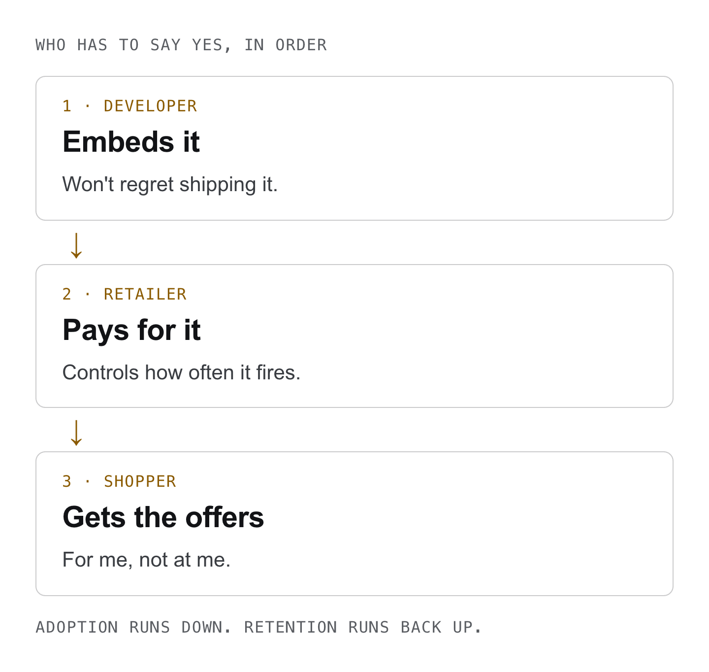
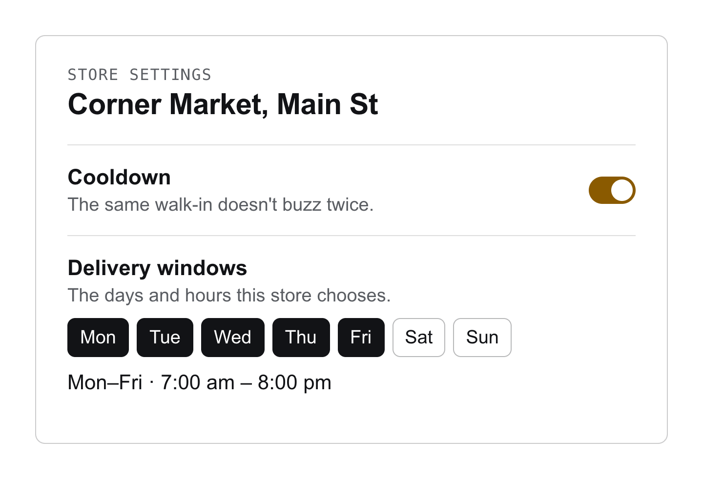

I led product on an app that sends offers as you walk into a store, then limited how often it could
WiWo notices when a phone walks into a store and, if there is an offer, sends a push. It is live on iOS and Android. I led product from April to early July. The co-founder built the prototype, the mobile engineer built the app and the backend engineer built the developer platform. I stepped back in August, and the engineers kept shipping.

My strategy named who WiWo was not for: the retailer who wants to blast everyone who walks by. That is email marketing with a geofence. Each of three customers needed its own reason to say yes, so I ordered them. The developer who embeds it comes first and won't ship what they'd regret. Then the retailer, who controls how often it fires. Then the shopper.

So before growth I specified two limits: a per-store cooldown, so one walk-in doesn't buzz twice, and delivery windows each store sets by day and hour. The mobile engineer built both in May.

I measured first. Two weeks of notifications went into a baseline before the cooldown, as the control. It showed that iPhones and Android phones behaved very differently, and that overlapping store outlines at one test site multiplied pushes.

When someone got no offer, every part looked fine. So I built an outcome debugger that follows one phone through each step and names the first that came up empty.
My one success metric, offer saves per walk-in, could not be measured then, because saves lived in another system. The app logs them now.